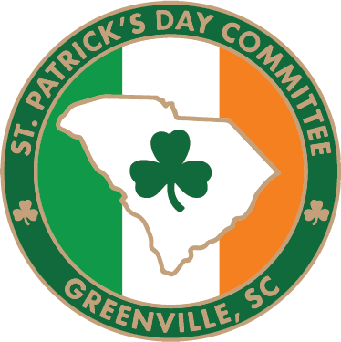
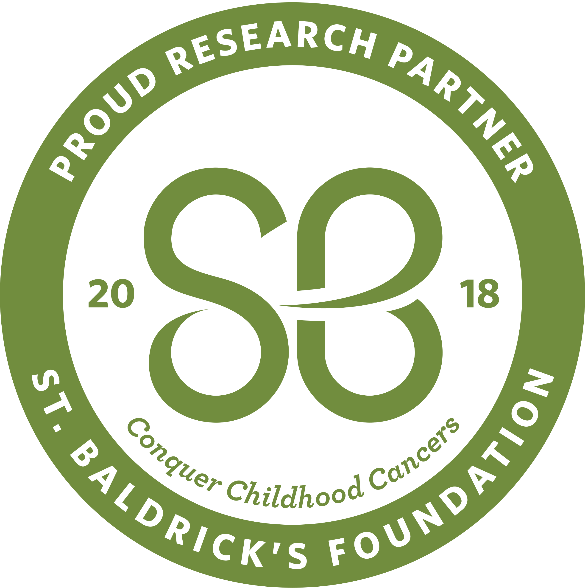

Volunteer Work
President, Ancient Order of Hibernians – Harp & Shamrock Division

Vice President, Greenville St. Patrick's Day Parade & Festival Committee

St. Baldrick's Foundation – Downtown Greenville Shaves
← Back to Home